Written by: Janaki Balasubramanian
MSc research project, Utrecht University, Department of Veterinary Medicine (supervisor: M. Belen Rabaglino)
03/11/2026
Abstract
Layman’s summary
Keywords and abbreviations
Introduction
Results
Samples, design constraints and global structure
Differential expression between IVP and IVV groups in each tissue
The IVP–IVV contrast in the two tissues
Gene-set patterns
Embryonic disc gene sets
Extra-embryonic membrane gene sets
Gene sets whose group contrast differs between tissues
Developmental expression contrasts are sensitive to disc-score adjustment
Wnt, BMP/TGF-β and Notch signalling genes
Genes driving the main gene-set patterns
Heat-shock genes
Within-cohort sensitivity analyses
Influence of individual embryos
Contribution of X-linked genes
Summary of sensitivity analyses
Discussion
Conclusion
Materials and methods
Supplementary section
Data and code availability
References
This exploratory analysis compared embryonic-disc (ED) and extra-embryonic-membrane (EEM) transcriptomes of four in vitro-produced (IVP) and four in vivo-produced (IVV) day-15 bovine conceptuses of the same length, with both tissues available from each conceptus. All IVP conceptuses were inferred to be male and all IVV conceptuses female, the IVP and IVV conceptuses were carried by two recipients and two superovulated donors respectively, and an unresolved sample-sheet label marks the four IVP conceptuses. Group differences in this primary comparison can therefore not be attributed specifically to IVP. Differential-expression analysis (DESeq2, FDR < 0.05) identified 1,218 genes in the ED and 721 in the EEM, and a paired-tissue model identified 417 genes for which the IVP–IVV contrast differed between tissues. In the ED, glycosylation and lipid-metabolism gene sets were more highly expressed in the IVP group and kept this direction across within-cohort sensitivity analyses, including omission of any single conceptus; only the disc-score-adjusted version depended on one conceptus. Developmental gene sets (morphogenesis, Wnt, BMP/TGF-β and Notch) were lower in the unadjusted IVP ED comparison, but this contrast was sensitive to adjustment for an internally derived disc-enrichment score; this is compatible with differences in tissue composition or in disc-cell state, which bulk RNA-seq cannot distinguish. In the EEM, adhesion and extracellular-matrix gene sets were higher in the IVP group and kept their direction in alternative analyses, whereas lower translation and respiration gene sets reversed. X-linked genes were over-represented among DEGs, but removing them did not change the gene-set results. These findings identify candidate expression differences in a selected, confounded cohort rather than effects of IVP, and should be tested in sex- and dam-balanced designs.
Food security is an important concern for a growing population, and livestock are critical for milk and meat production. In cattle breeding, embryos produced in the laboratory (in vitro production, IVP) are now used more often than embryos produced inside the cow (in vivo, IVV): in 2020, about two thirds of the roughly 1.1 million bovine embryos transferred worldwide were IVP (Viana, 2021). IVP accelerates genetic gain, but IVP embryos are lost more often during early pregnancy, mostly while the embryo elongates between day 7 and day 21. At about day 15 the embryo has two distinct parts: the embryonic disc (ED), which forms the fetus, and the extra-embryonic membranes (EEM), which form the placenta.
This project compared gene activity in the ED and EEM of IVP and IVV embryos of the same length. The two groups differed in the activity of hundreds of genes in both parts. In the embryonic disc, the IVP group showed higher activity of genes for sugar attachment to proteins (glycosylation) and fat metabolism. In the membranes, genes for cell attachment and the surrounding matrix were more active in the IVP group. Disc samples from the IVP group also had lower activity of genes typical of the disc; this could mean that the samples contained less disc tissue, that the disc cells were in a different state, or both. Because all IVP embryos in this comparison happened to be male and all IVV embryos female, and each group came from only two cows, these differences cannot be attributed to the laboratory procedure itself and need to be confirmed in larger, better-balanced studies. Understanding these differences can help improve culture conditions for laboratory-produced embryos.
Assisted reproductive technologies
In vitro embryo production
Transcriptomics
Pregnancy
Conceptus elongation
| DEG | Differentially expressed gene | IVP | In vitro produced/production |
| ED | Embryonic disc | IVV | In vivo produced/production |
| EEM | Extra-embryonic membranes | LFC | Log2 fold change |
| FDR | False discovery rate (Benjamini–Hochberg) | LOEO | Leave-one-embryo-out |
| GO | Gene Ontology | NES | Normalised enrichment score |
| GSEA | Gene set enrichment analysis | ORA | Over-representation analysis |
| IFNT | Interferon tau | PCA | Principal component analysis |
| SVM | Support vector machine | RF | Random forest |
| VST | Variance-stabilising transformation | TE | Trophectoderm |
Ensuring food security in the face of a continuously growing global population is of great importance. Within the cattle industry, enhancing reproductive efficiency is a crucial necessity to guarantee a steady supply of milk and meat (Barkema et al., 2015). The successful implementation of assisted reproductive technologies in cattle has reduced generational intervals and increased genetic gain in breeding populations, with positive economic outcomes for both beef and milk production (Granleese et al., 2015; Moore & Hasler, 2017). In vitro produced (IVP) embryos are produced more each year: in 2020, two thirds of bovine embryos transferred worldwide were IVP, compared with one third produced by traditional in vivo (IVV) methods (Viana, 2021). IVP offers advantages in resource utilisation, labour efficiency and facility management. It also makes it possible to use oocytes from animals no longer in the breeding programme, preserving and “recycling” valuable genetic information even after these animals have left the food production system. This accelerates genetic improvement from young females and maximises the use of genetic information from animals destined for the food chain (Viana et al., 2018).
However, IVP has its own disadvantages and risks. IVP embryos show a higher incidence of pregnancy loss than IVV embryos (Holm & Callesen, 1998), with average pregnancy rates after transfer of about 40% for IVP compared with 64% for IVV embryos, a difference of about 24 percentage points (Ealy et al., 2019; Behrens et al., 2025), suggesting that the IVP process introduces factors that affect embryo viability and development. Embryonic loss may occur because of problems during conceptus elongation (Clemente et al., 2011; Hansen, 2020). Stressors in the in vitro environment, such as chemical exposure, mechanical handling, culture media, oxygen concentration and temperature fluctuations, can alter DNA methylation and induce oxidative stress, potentially leading to lasting changes in the embryo’s transcriptome (de Barros & Paula-Lopes, 2018). The main molecular differences between IVP and IVV embryos arise during the in vitro period, which includes embryonic genome activation (EGA), a critical event for embryo viability (Khan et al., 2012). Culture conditions during IVP affect EGA and, in turn, the embryonic epigenome, transcriptome and proteome (Banliat et al., 2022; Gad et al., 2012; Salilew-Wondim et al., 2018).
Successful pregnancy requires a well-regulated dialogue between the developing embryo and the maternal environment (Chankeaw et al., 2021). After natural mating or artificial insemination (AI), the embryo reaches the uterus around day 4. In embryo transfer, embryos are placed in the uterus of a synchronised recipient on day 7. IVV embryos are traditionally produced by stimulating a donor cow’s ovaries, leading to multiple ovulations, followed by AI, embryo collection and transfer. In IVP, oocytes are collected from live cows by transvaginal follicle aspiration or from ovaries after slaughter, and are matured, fertilised and cultured in vitro (Holm & Callesen, 1998). By day 7, most embryos have reached the blastocyst stage, which consists of a fluid-filled cavity and two cell types: the inner cell mass and the outer trophectoderm (TE). The inner cell mass forms the epiblast, which becomes the embryonic disc (ED) and eventually the fetus, and the hypoblast, which together with the TE forms the extra-embryonic membranes (EEM) that give rise to the placenta. Around days 9–10, the blastocyst hatches from the zona pellucida. The TE then proliferates rapidly and the conceptus changes from spherical to ovoid, tubular and finally filamentous by days 12–16, a process called conceptus elongation. Elongation increases the surface area of the TE, which is needed to secrete sufficient interferon tau (IFNT). IFNT prevents luteolysis, the regression of the corpus luteum, and thereby maintains the progesterone (P4) production needed for early pregnancy. In cattle, implantation occurs only after elongation. Higher P4 early in pregnancy accelerates conceptus elongation and increases pregnancy success, whereas low P4 delays the changes in the endometrial transcriptome needed to support the conceptus (Clemente et al., 2009).
Transcriptomic studies show that IVP and IVV blastocysts have distinct transcriptomic profiles (Rabaglino et al., 2021), and that embryos able to establish pregnancy differ in their transcriptome from those that are lost (Zolini et al., 2020); on the maternal side, the endometrial transcriptome also differs with uterine receptivity (Rabaglino & Kadarmideen, 2020). Conceptus length around day 15 is also associated with the transcriptome and with viability (Berg et al., 2010; Wang et al., 2009): short conceptuses exposed to low P4 fail to up-regulate many IFNT-dependent and IFNT-independent endometrial genes, and longer conceptuses are more likely to establish pregnancy. IVP conceptuses are smaller than IVV conceptuses at day 13 (Clemente et al., 2011), indicating impaired or delayed initiation of elongation. In the full cohort from which the present samples were taken, IVP conceptuses were shorter than IVV conceptuses at day 15, and an embryonic disc was found in only 55% of IVP compared with 94% of IVV conceptuses (Behrens et al., 2025). Restricting the comparison to conceptuses of the same length reduces, but does not remove, differences in developmental stage. It also selects a particular subset: conceptuses that elongated to a given length and had a detectable disc, so that results apply to these selected conceptuses rather than to IVP conceptuses in general.
The aim of this project was to characterise ED and EEM expression differences between selected IVP and IVV day-15 conceptuses of the same length, to assess whether the group contrast differs between tissues, and to examine how sensitive the biological interpretation is to cohort selection, to individual embryos and to an expression-derived disc-enrichment score. Specifically, the objectives were to: (1) identify genes differentially expressed between the IVP and IVV groups in each tissue; (2) test whether the IVP–IVV contrast differs between ED and EEM, using a model that accounts for both tissues coming from the same embryo; (3) characterise the gene-set patterns involved; and (4) assess which patterns remain consistent across within-cohort sensitivity analyses.
The primary comparison comprised ED and EEM from four IVP conceptuses (IVP9, IVP10, IVP11, IVP14) and four IVV conceptuses (VE24, VE26, VE28, VE29) of the same length, recorded in the sample sheet as “elongated, short”; one additional IVP disc without a matching EEM library (IVPF10_EC) was excluded. Every library of the cohort, with its inclusion in each analysis, is listed in Supplementary Table S1. Measured conceptus lengths and embryo-to-cow assignments were not available for this analysis, so the matching tolerance and the cow of origin of each conceptus cannot be reported. Library sizes were uniform (55.6–57.4 million assigned reads). In PCA, the first component separated ED from EEM and the second separated IVP from IVV in both tissues (Figure 1). EEM library IVP9_T1A correlated less with the other libraries of its group than any other EEM library (mean r = 0.84 vs 0.91–0.97); its influence is examined under “Influence of individual embryos”.
Embryo sex was inferred from the strongly sex-dimorphic expression of XIST, which is much higher in female than in male conceptuses. All IVP libraries of the primary comparison had XIST below 1 count per million (inferred male), whereas all IVV libraries had 29–57 counts per million (inferred female), with ED and EEM of each conceptus in agreement (Supplementary Table S1). Y-linked genes could not serve as a second check: the only Y-annotated gene in the count matrix, RPS4Y1, was expressed at similar levels in all libraries. Production system and inferred sex are therefore fully confounded in the primary comparison.
To see which recorded sample characteristics drive the main axes of variation, the scores of the first ten principal components were correlated with the metadata of all 32 libraries in the cohort, and separately for the ED and EEM libraries (Supplementary Figure S3). Across all libraries, PC1 (61% of variance) was explained almost entirely by tissue (r = 0.95), so the difference between disc and membranes is by far the largest source of variation, which supports analysing the two tissues separately. Production group was the next-largest source of variation, associated with PC2 (12%; r = 0.62); this component also tracked library size (r = −0.67), indicating that part of the variation along it is technical. PC3 (4%) separated the same-length libraries from the rest of the cohort (r = 0.78), and embryo sex was associated with PC4 (3%; r = −0.82), on the same axis as production group because most IVP embryos were male.
Within the ED, PC1 (47%) was associated with production group (r = −0.76) and, along the same axis, with the disc-specific transcript score (r = 0.74): IVP disc sections scored low on both. Because the score is computed from the same expression data, this agreement is expected and is not independent evidence about tissue composition. Library size (r = 0.66) and sex (r = −0.53) also correlated with this component because they partly coincide with production group in these samples. Within the EEM, PC1 (35%) was associated with library size (r = −0.67) and production group (r = 0.58), and production group was also associated with PC3 (r = 0.58).
All IVP embryos were transferred fresh (Behrens et al., 2025). A sample-sheet label (“Vitrified”) nevertheless marks the four selected IVP conceptuses (IVP9, IVP10, IVP11 and IVP14) and no other conceptus; its meaning is unresolved. This label was associated with PC2 of the ED (r = 0.66) and, most strongly of any variable in the EEM, with PC3 of the EEM (r = 0.82), so the four embryos carrying it have a distinct expression profile, particularly in the membranes. Because the label is fully confounded with production group in the primary comparison, variation associated with the unresolved sample-sheet label cannot be separated from the IVP–IVV contrast. Overall, inferred sex, library size and the unresolved sample-sheet label all align with axes related to production group. These correlations are descriptive and do not establish cause, but they show that these factors cannot be separated from the IVP–IVV contrast in the primary comparison.
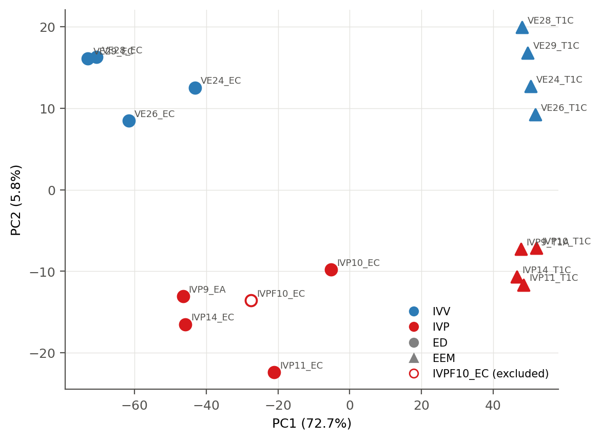
Differential expression was tested on raw read counts with DESeq2 separately for each tissue (4 IVP vs 4 IVV embryos). In the ED, 1,218 of 15,641 tested genes were differentially expressed (FDR < 0.05): 467 higher and 751 lower in IVP. In the EEM, 721 of 14,564 tested genes were differentially expressed: 423 higher and 298 lower in IVP (Figure 2). Because all IVP embryos were male and all IVV embryos female, these DEGs are differences between the two groups, not effects of the in vitro procedure; X-linked genes, for example, were over-represented among them (see “Contribution of X-linked genes”).
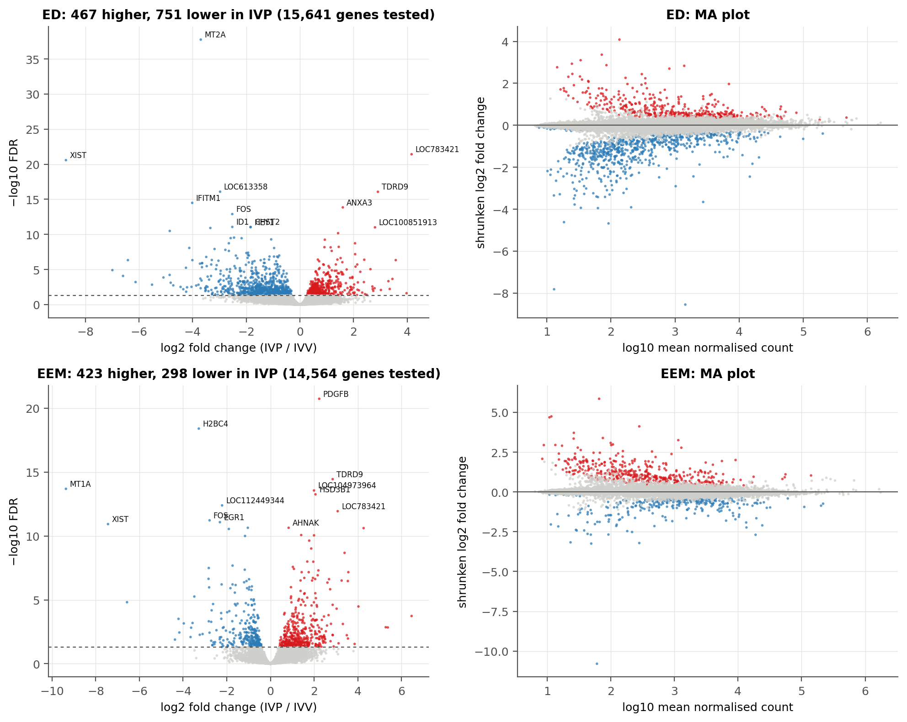
ED had more DEGs than EEM (1,218 vs 721), but the median absolute shrunken log2 fold change across the 14,401 genes tested in both tissues was numerically similar (0.078 in ED and 0.079 in EEM); this descriptive summary does not establish that the two tissues are equally susceptible. The IVP–IVV contrasts of the two tissues were positively but moderately correlated (Pearson r = 0.46), and 295 genes were differentially expressed in both (Figure 3). To test formally whether the group contrast differs between tissues, a tissue × group interaction was fitted in a model that accounts for ED and EEM coming from the same embryo (but not for embryos sharing a cow). For 417 genes, the IVP–IVV contrast differed significantly between tissues (FDR < 0.05), so a subset of genes shows a tissue-dependent group contrast. This interaction model was not adjusted for the disc-specific transcript score, and part of the interaction reflects the lower disc-specific signal in IVP ED sections described below.
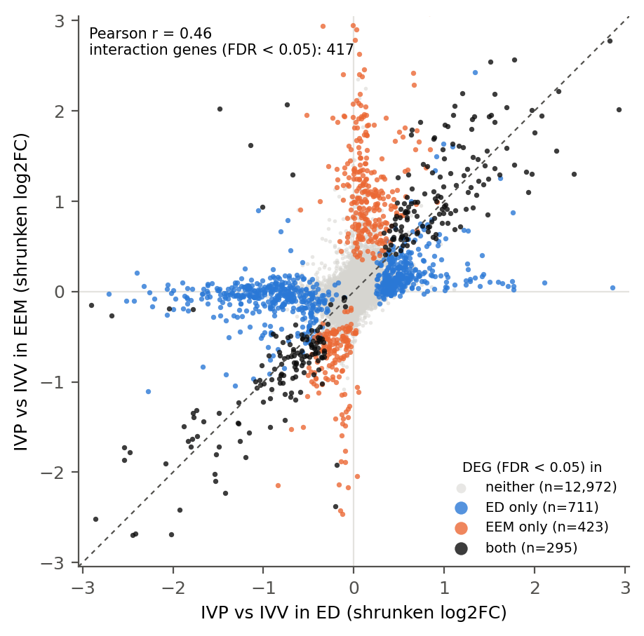
Two complementary approaches were used. Over-representation analysis (ORA) tested whether GO biological-process terms occur among the up- or down-regulated DEGs more often than expected relative to all genes tested. Gene set enrichment analysis (GSEA) used every tested gene ranked by the DESeq2 Wald statistic and tested whether the members of a GO term or KEGG pathway cluster toward the top (higher in IVP) or bottom (lower in IVP) of the ranking. Because GSEA does not depend on a significance cut-off, it detected many more coordinated expression differences than ORA (Table 1). Enrichment describes coordinated expression of pathway-associated genes, not measured pathway activity. For the ED, results are shown both without and with adjustment for the disc-specific transcript score, an estimate of how much embryonic-disc tissue each ED section contains; how the two are read together is explained in “Developmental expression contrasts are sensitive to disc-score adjustment”. The main terms are summarised in Figure 5, the strongest terms of each analysis are listed in Supplementary Table S2, and complete tables are provided with the analysis code.
Table 1. Number of significant GO biological-process terms and KEGG pathways (BH FDR < 0.05) per analysis. ORA, among DEGs higher (up) or lower (down) in IVP; GSEA, gene sets shifted toward higher or lower expression in IVP. For the interaction, “higher” means a more positive IVP–IVV contrast in the EEM than in the ED.
| Analysis | GO ORA (DEGs) | GO GSEA | KEGG GSEA | |||
|---|---|---|---|---|---|---|
| up | down | higher | lower | higher | lower | |
| ED | 4 | 8 | 35 | 45 | 11 | 29 |
| ED, disc-adjusted | 12 | 0 | 116 | 44 | 19 | 24 |
| EEM | 0 | 6 | 123 | 95 | 39 | 35 |
| Interaction (EEM − ED) | – | – | 262 | 187 | 34 | 38 |
Among ED DEGs, genes higher in IVP were over-represented in glycosylation (15 genes, FDR = 0.009) and related glycoprotein-biosynthesis terms, and genes lower in IVP in anatomical structure morphogenesis (46 genes, FDR = 0.001), animal organ morphogenesis, neuron differentiation, enzyme-linked receptor signalling and protein refolding (FDR 0.005–0.043; Figure 4). GSEA identified 35 GO terms higher and 45 lower in IVP. Gene sets higher in IVP were dominated by protein modification and lipid metabolism: protein lipidation and palmitoylation (NES 2.16–2.29), glycosylation (2.15), and membrane-lipid and sphingolipid metabolism (1.97–2.00). The KEGG analysis agreed, with glycerophospholipid, glycerolipid, ether-lipid and sphingolipid metabolism, N-glycan and mucin-type O-glycan biosynthesis, and steroid hormone biosynthesis higher in IVP (NES 1.72–2.09). Gene sets lower in IVP were developmental: embryo development, animal organ morphogenesis, cell fate commitment and embryonic morphogenesis (NES −1.87 to −2.05) and canonical Wnt signalling (−1.66), together with chaperone-mediated protein folding (−1.88 to −1.98). In KEGG, TGF-β, Wnt and Notch signalling and signalling pathways regulating stem-cell pluripotency were lower in IVP (NES −1.74 to −1.80). Several KEGG disease pathways (for example, transcriptional misregulation in cancer and basal cell carcinoma) were also lower; they share developmental transcription factors and signalling genes with the pathways above and are not interpreted as disease processes.
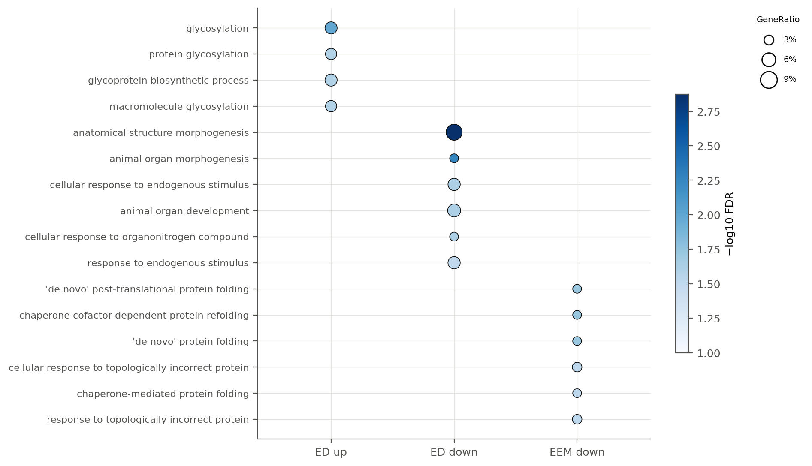
Among EEM DEGs, ORA found no terms for genes higher in IVP and six protein-folding terms for genes lower in IVP (5–6 chaperone genes, FDR 0.027–0.043; Figure 4). GSEA was more informative, with 123 GO terms higher and 95 lower in IVP. Gene sets higher in IVP EEM concerned the cell surface and the extracellular environment: cell adhesion and cell migration (NES 1.94 and 1.85), wound healing and blood coagulation (2.10 and 1.98), axon guidance and semaphorin–plexin signalling (2.10 and 1.96), and potassium-ion transport (2.09). In KEGG, ECM–receptor interaction, integrin signalling, cell adhesion molecules, cytoskeleton in muscle cells, calcium signalling, cytokine–cytokine receptor interaction, complement and coagulation cascades, and glycosphingolipid biosynthesis were higher in IVP (NES 1.80–2.21). Gene sets lower in IVP EEM concerned energy metabolism, protein synthesis and protein handling: aerobic respiration, oxidative phosphorylation and the electron transport chain (NES −2.25 to −2.33), ATP biosynthesis (−2.14), cytoplasmic translation and ribosome biogenesis (−2.14 and −1.96), and protein folding and the response to unfolded protein (−2.14 to −2.21). In KEGG, protein processing in the endoplasmic reticulum (−2.48), ribosome (−2.35), proteasome, the citrate (TCA) cycle and spliceosome (−1.99 to −2.16) were lower. The adhesion and extracellular-matrix pattern kept its direction in the within-cohort sensitivity analyses, whereas the translation and respiration pattern did not (see “Within-cohort sensitivity analyses”).
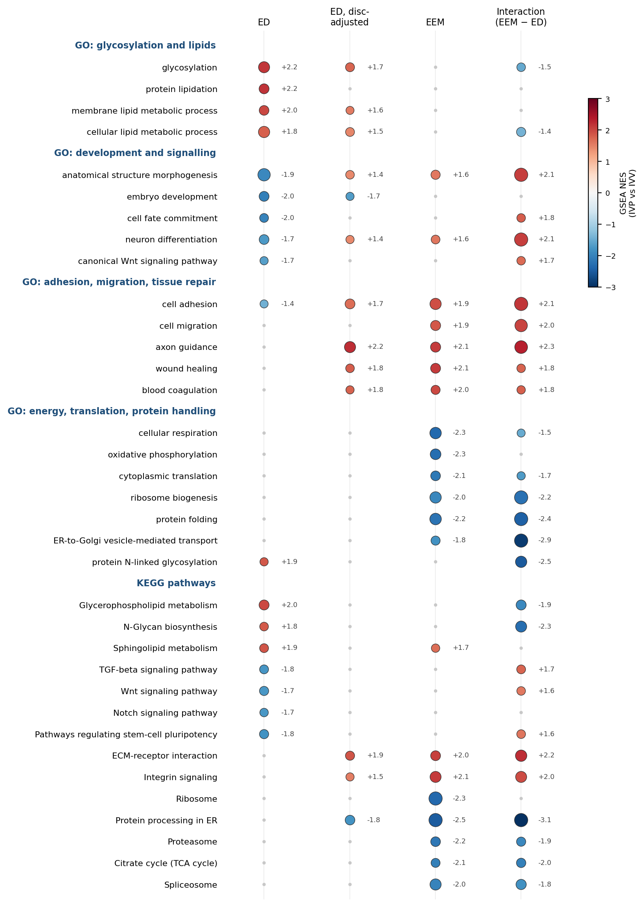
GSEA of the interaction statistic, which ranks genes by how much the IVP–IVV contrast in the EEM exceeds that in the ED, identified 262 GO terms with a more positive and 187 with a more negative contrast in the EEM. Terms with a more positive contrast in the EEM were adhesion and morphogenesis programmes: axon guidance and axon development (NES 2.31–2.34), cell adhesion (2.14), generation of neurons and cell morphogenesis (2.09–2.11), and in KEGG, ECM–receptor interaction, cell adhesion molecules, cytoskeleton in muscle cells, integrin signalling and axon guidance (1.96–2.22). Figure 5 shows that this contrast arises because these programmes were lower in IVP ED but higher in IVP EEM; after adjusting the ED for the disc-specific transcript score, they were higher in IVP in both tissues. Terms with a more negative contrast in the EEM formed the secretory pathway: endoplasmic reticulum-to-Golgi vesicle transport (NES −2.86), Golgi vesicle transport (−2.63), protein N-linked glycosylation (−2.51), protein folding (−2.44), protein targeting to the endoplasmic reticulum and the response to endoplasmic-reticulum stress (−2.31 to −2.38), and in KEGG, protein processing in the endoplasmic reticulum (−3.06), N-glycan biosynthesis (−2.29) and protein export (−2.29). This contrast combines higher glycosylation and lipid-metabolism genes in IVP ED with lower protein-processing genes in IVP EEM.
Because the disc is small relative to the surrounding membranes, every ED section also contains some EEM tissue. As an expression-based indicator of disc content, ED-enriched marker genes were defined from the four IVV conceptuses of the primary comparison (ED vs EEM of the same conceptus), and a disc-specific transcript score was computed as their mean VST expression. The score is not a measured cell proportion, and because its markers were selected in the comparison group itself, it is not independent of the IVP–IVV comparison. It is relevant because an ED section with less disc tissue would show lower expression of disc-enriched genes even if every disc cell expressed them normally, through dilution by membrane cells; lower expression of disc-identity genes within disc cells would produce the same pattern. IVP ED sections had lower scores than IVV ED sections (7.3–8.5 vs 8.3–9.3); IVP10_EC and IVP11_EC were lower than every IVV section (Figure 6A). Across ED DEGs, the IVP fold change was strongly anti-correlated with disc specificity (Spearman ρ = −0.66), and 55.5% of the genes lower in IVP ED were disc-enriched genes.
After adjusting the ED model for the disc-specific transcript score, the number of genes lower in IVP fell from 751 to 299 (659 DEGs in total). The developmental terms that were lower in IVP ED became enriched among genes higher in IVP (NES +1.45 to +1.67), the same direction as in the EEM, whereas glycosylation and lipid metabolism remained higher in IVP (Figure 6B). Not every developmental signal disappeared: embryo development remained lower in IVP (NES −1.68), and gene sets for cell cycle, ubiquitin-dependent protein catabolism, mRNA processing and the DNA damage response were lower in IVP only after adjustment (NES −1.49 to −1.88; KEGG p53 signalling, apoptosis and cell cycle). At the gene level, most ED Wnt, BMP and TGF-β DEGs (e.g. WNT3, WNT5A, LEF1, BMP4, DKK3, TGFB2) tracked the disc-specific transcript score and lost significance after adjustment (Figure 7). This sensitivity is compatible with less disc tissue in IVP sections, but also with differences in disc-cell state or in marker expression, which bulk RNA-seq cannot distinguish.
How the two ED analyses are read. The unadjusted model keeps all group differences but cannot separate changes in expression from differences in how much disc material each section contains. The score-adjusted model is an exploratory sensitivity analysis conditional on an expression-derived covariate: because the score is itself lower in the IVP group and is built from disc-enriched genes, adjustment may remove both composition-associated and biologically regulated differences, and its coefficients are not effects at experimentally verified equal tissue composition. The two models are therefore read together. A gene set that differs in both (glycosylation, lipid metabolism) is a difference retained after adjustment for the disc-enrichment score; a gene set that differs only without adjustment (most morphogenesis, Wnt and BMP terms) is sensitive to the score; and a gene set that differs only after adjustment (cell cycle, DNA damage response) is exploratory. Neither pattern establishes or excludes a compositional explanation. Lower disc-enriched expression in IVP sections is itself a group difference and is reported, not discarded.
Dependence on marker selection. Rebuilding the disc-marker set four times, each time without one of the four IVV conceptuses, gave 262–471 markers that included nearly all original markers (261–263 of 263) and scores almost identical to the original (r ≥ 0.999). In every version, the IVP group had a lower mean score and two IVP sections scored below every IVV section, the score-adjusted model found 607–663 DEGs (659 originally), and the adjusted gene-set results were unchanged (glycosylation NES 1.73–1.76, anatomical structure morphogenesis 1.37–1.46, embryo development −1.71 to −1.80). The score is therefore insensitive to which IVV conceptus defines it, although this does not show that it measures tissue composition; its dependence on individual IVP conceptuses is described under “Influence of individual embryos”.
A
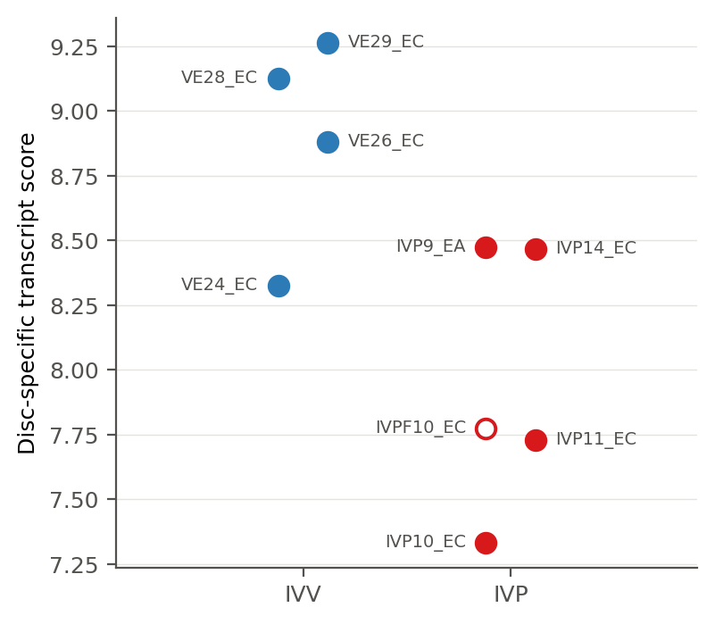
B
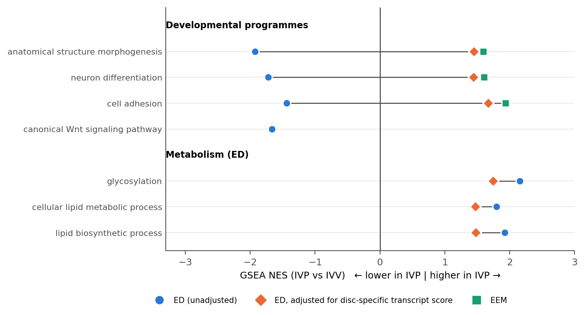
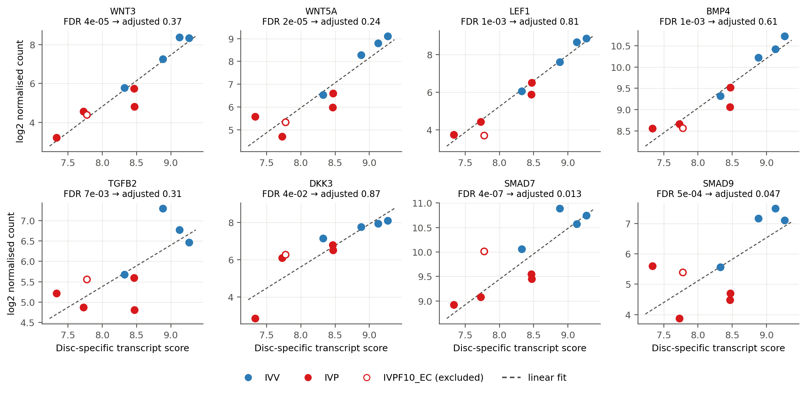
To show the developmental signalling changes at the level of individual genes, ED DEGs from the leading edge of the KEGG Wnt, TGF-β and Notch pathways were plotted for both tissues (Figure 8). In the ED, all 17 genes were lower in IVP (log2 fold change −1.1 to −3.7). Ten of them lost significance after adjustment for the disc-specific transcript score (adjusted FDR 0.09–0.81): WNT3, WNT5A, LEF1, NKD1, NOTCH1, DLL3 and MFNG, which in IVV embryos are expressed much more highly in the disc than in the membranes, and BMP4, ID4 and TGFB2. Their contrast is therefore sensitive to the disc score. Six genes remained lower in IVP after adjustment: WNT10B, FRAT2, ID1, SMAD7, SMAD9 and HEY1 (adjusted FDR 0.0001–0.047), and DTX1 was close (0.098).
Two patterns stood out among these genes. First, the Notch target HEY1, the Wnt-pathway gene FRAT2 and the Wnt feedback inhibitor NKD1 were also lower in IVP EEM (FDR ≤ 3 × 10−5), so their lower expression in the IVP group is shared by both tissues rather than specific to the disc. HEY1 was lower in the IVP group in both tissues in the male-only and full-cohort comparisons as well, and the BMP target ID1 was lower in IVP EEM in both of these analyses (FDR 0.044 and 0.001), making HEY1 and ID1 the most consistent signalling differences. Second, the disc-specific reductions that survived adjustment in the primary comparison (WNT10B, SMAD7, SMAD9) did not survive adjustment in the full cohort (FDR 0.45–0.84), although SMAD9 was lower in IVP ED in the unadjusted male-only and full-cohort comparisons. WNT5A showed opposite trends in the two tissues (lower in IVP ED, higher in IVP EEM; EEM FDR 0.10). The per-gene results for all analyses are listed in the repository table signalling_genes.csv.
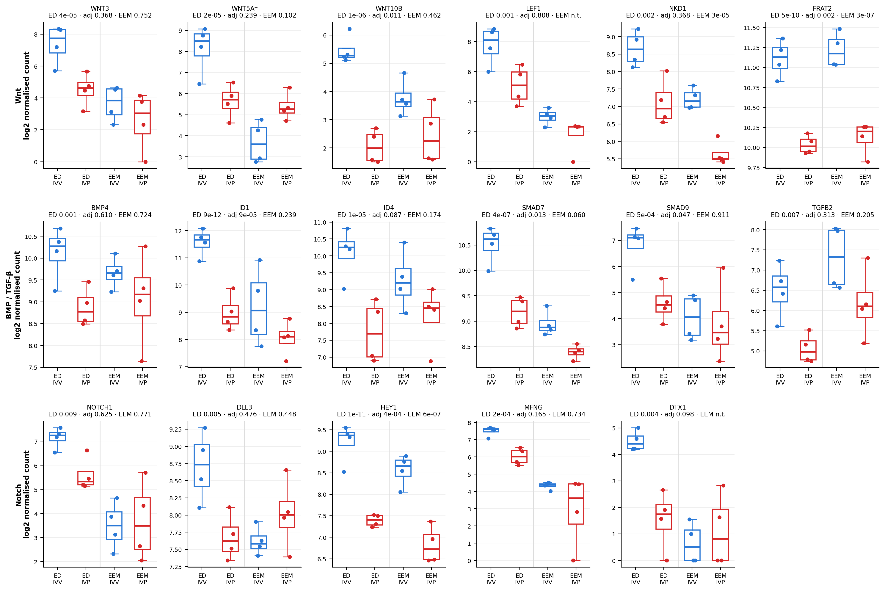
Many of the significant GO terms and KEGG pathways overlap, so several labels may describe the same few genes. For each main pattern, the leading-edge genes of a representative gene set and of related sets were therefore compared (Table 2). The glycosylation sets overlapped strongly (median Jaccard 0.61): glycosylation, protein glycosylation, glycoprotein biosynthesis and N-glycan biosynthesis describe one signal, carried by genes such as SLC35C1, A4GALT, FUT2, ALG11, MOGS and MGAT1. The lipid-metabolism sets overlapped less (0.16) and were driven by sphingolipid and fatty-acid genes (SPTSSA, CERS5, ELOVL6, DEGS2, B4GALNT1), so lipid metabolism is a broader pattern than glycosylation. The developmental sets overlapped little (0.03) apart from shared Wnt ligands (WNT3, WNT5A, WNT5B, WNT10B, WNT16, WNT3A), and 15% of the morphogenesis leading edge were disc-score marker genes, compared with none in the glycosylation and lipid leading edges. In the EEM, adhesion sets shared integrin and matrix genes (ITGB3, ITGB6, ITGB7, ITGA2, LAMA1, THBS4, VWF), whereas translation and respiration sets did not overlap and represent separate gene groups.
Most leading-edge genes kept the sign of their fold change in the disc-score-adjusted, male-only and full-cohort analyses (66–88%). The exceptions were the EEM translation/respiration leading edge (39–43%, i.e. mostly reversed) and protein folding (53–56%), whose leading edge includes many chaperones besides the consistently lower inducible heat-shock genes. For the developmental leading edge, 78% of genes kept a negative fold change after disc-score adjustment even though the gene set as a whole moved to a positive NES. Because GSEA ranks each gene against all others, a set can change sign when adjustment shifts the whole ranking while its own genes are only weakened; the adjusted developmental result is therefore best described as a loss, not a reversal, of the group contrast.
Table 2. Leading-edge (core-enrichment) genes behind the main gene-set patterns. Themes, representative sets and related sets were fixed before the analysis. Representative set: GO term and number of leading-edge genes. Related sets: number of GO terms/KEGG pathways in the theme and the median pairwise Jaccard overlap of their leading edges (1 = identical genes, 0 = no shared genes). Recurrent drivers: leading-edge genes shared by at least half of the related sets, ordered by the size of the group contrast. Disc markers: share of the representative leading edge that belongs to the disc-score marker set. Same direction: share of representative leading-edge genes whose fold change has the same sign as in the primary analysis in the disc-score-adjusted ED / male-only / full-cohort analyses. For protein folding in the ED the representative set is protein refolding.
| Theme | Representative set (genes) | Related sets (overlap) | Recurrent drivers | Disc markers | Same direction: adjusted / male-only / full |
|---|---|---|---|---|---|
| ED glycosylation | glycosylation (54) | 4 (0.61) | SLC35C1, A4GALT, FUT2, ALG11, DOLPP1, MOGS, MGAT1, CRPPA | 0% | 85% / 70% / 81% |
| ED lipid metabolism | cellular lipid metabolic process (150) | 5 (0.16) | SPTSSA, TRAM2, CERS5, PIGO, B4GALNT1, ST6GALNAC6, ELOVL6, DEGS2 | 0% | 85% / 67% / 67% |
| ED development / signalling | anatomical structure morphogenesis (144) | 6 (0.03) | WNT10B, WNT5A, WNT3, TBX6, WNT5B, BAMBI, WNT16, WNT3A | 15% | 78% / 87% / 88% |
| EEM adhesion / ECM | cell adhesion (92) | 5 (0.12) | ITGB7, ITGA2, TYRO3, ITGB3, LAMA1, THBS4, ITGB6, VWF | – | – / 76% / 66% |
| EEM translation / respiration | cytoplasmic translation (28) | 5 (0.00) | RPSA, RPLP0, LOC781576, RPL26 | – | – / 43% / 39% |
| Protein folding (ED and EEM) – ED | protein refolding (9) | 2 (0.29) | HSPA1A, HSPA6, HSPA8, HSPA2 | 0% | 100% / 56% / 56% |
| Protein folding (ED and EEM) – EEM | protein folding (64) | 4 (0.27) | DNAJB1, HSPA6, HSPA8, DNAJB5, HSPA1A, DNAJB2, DNAJB13, DNAJA4 | – | – / 53% / 55% |
The inducible heat-shock chaperones that drive the protein-folding terms (HSPA1A, HSPA6, DNAJB1) and HERPUD1 were lower in the IVP group in both tissues (Figure 9), and their direction was the same in all sensitivity analyses (for example, HSPA6 log2 fold change −1.6 to −5.6). These genes also respond to handling stress, so this shared pattern may partly reflect differences in collection; its cause is unresolved.
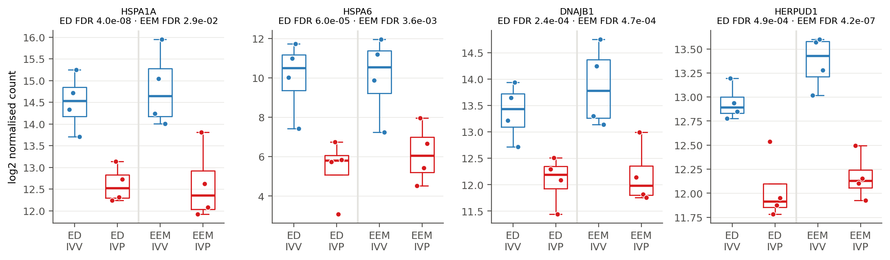
The analyses in this and the following sections reuse samples from the primary comparison and the same study conditions. They test how much the interpretation depends on particular samples, models or embryos and are not independent replications. Two of them used additional embryos from the same cohort (Materials and methods). In a comparison of male embryos only (ED, 7 IVP vs 2 IVV; EEM, 5 vs 2; the 2 IVV males are not part of the primary comparison), 78% of the ED DEGs and 80% of the EEM DEGs from the primary analysis changed in the same direction. In a full-cohort model including embryos of all lengths with sex and length group as covariates (16 ED and 14 EEM libraries, including all primary libraries), 76% and 78% changed in the same direction. Across all tested genes, fold changes correlated moderately with the primary analysis (Spearman ρ = 0.36–0.42).
At the gene-set level (Figure 10), glycosylation and lipid metabolism were higher in IVP ED in every analysis and significant in the full cohort with and without adjustment for the disc-specific transcript score (NES 1.4–1.9); in the male-only comparison, which has only two IVV embryos, they had the same direction but were not significant. The developmental terms were lower in IVP ED in the male-only and full-cohort analyses (NES −2.2 to −2.4) and, as in the primary analysis, were no longer lower after disc adjustment. In the EEM, translation, ribosome biogenesis and cellular respiration reversed direction in both analyses (NES +1.5 to +2.6), so this pattern is not stable across cohort specifications; the source of the discrepancy (sex, cow, sample selection or model) is unresolved. Cell adhesion, cell migration and protein folding kept their direction but were not significant in the smaller or more heterogeneous analyses.
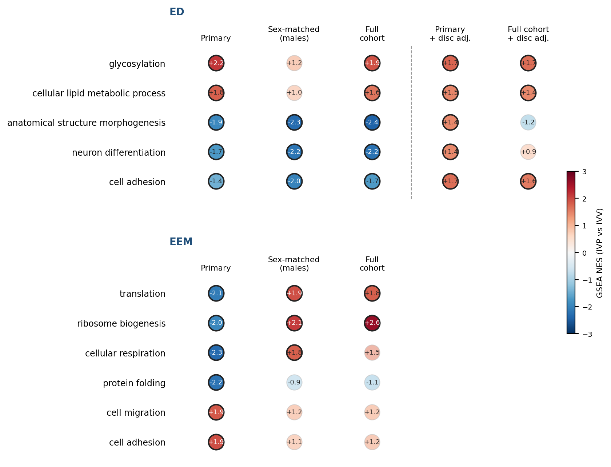
To test whether single conceptuses drive the main patterns, each of the eight conceptuses was omitted in turn (both of its libraries) and all four models were refitted (Figure 11). Across omissions, 99.8–100% of primary DEGs kept their direction, and fold changes correlated with the full analysis at Pearson r = 0.96–0.99 in the ED, 0.88–0.98 in the EEM and 0.92–0.97 for the interaction. In the unadjusted ED, glycosylation and lipid-metabolism gene sets stayed higher in the IVP group (NES 1.66–2.27) and the developmental gene sets stayed lower (NES −1.39 to −2.07) whichever conceptus was omitted. In the EEM, adhesion and migration (NES 1.73–2.02) and translation, ribosome biogenesis, respiration and protein folding (NES −1.49 to −2.60) kept their direction in every omission, and the interaction patterns were equally stable. The inducible heat-shock genes and the signalling genes HEY1, ID1 and FRAT2 kept a negative fold change in every omission in both tissues.
The disc-score-adjusted ED model was less stable. When IVP14 was omitted, glycosylation and lipid-metabolism gene sets reversed (NES −0.79 to −0.92), translation-related gene sets changed sign, and the fold-change correlation with the full adjusted analysis fell to 0.85 (0.84 when IVP9 was omitted). IVP14 and IVP9 have the highest disc scores of the IVP group (both 8.47); a likely reason is that, without one of them, the score is more closely aligned with group membership, so that the adjusted group contrast is poorly determined. The adjusted ED result therefore depends on individual conceptuses, whereas the unadjusted ED and EEM patterns do not.
Omitting only the EEM library IVP9_T1A (equivalent to omitting IVP9 for the EEM model) increased the number of EEM DEGs from 721 to 805. All 709 comparable primary DEGs kept their direction, 547 remained significant, fold changes correlated at r = 0.88, and every EEM gene-set pattern kept its direction, so the EEM results are stable to this library.
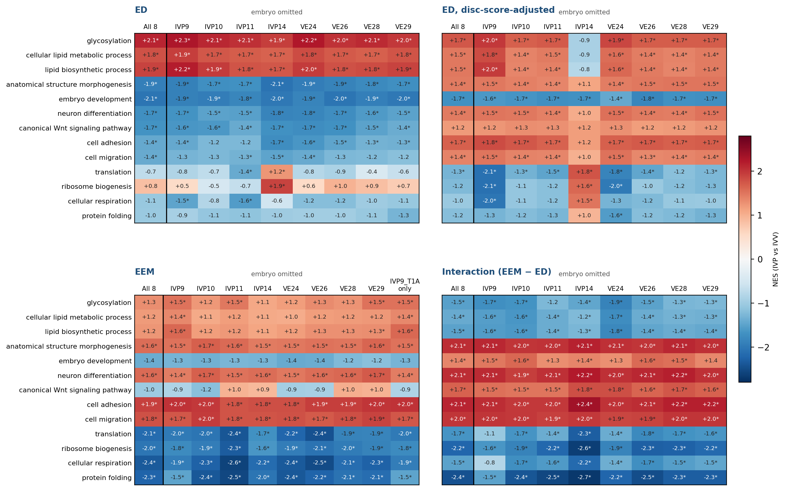
Because all IVP embryos in the primary comparison were male and all IVV embryos female, X-linked genes could appear to respond to IVP because of sex alone, for example through dosage differences arising from incomplete X inactivation. X-linked genes made up 3.4% of the genes tested in the ED and 3.2% in the EEM, but 8.0% of ED DEGs and 10.4% of EEM DEGs (Table 3; Fisher’s exact test, odds ratio 2.8 and 4.0, p < 10−15). Most X-linked DEGs were lower in IVP (79 of 97 in the ED and 55 of 75 in the EEM), as expected if they are more highly expressed in female embryos. They include XIST itself and genes such as KDM6A, USP9X and ZFX that escape X inactivation in other mammals. These X-linked DEGs are therefore best regarded as sex-related rather than IVP-related; they are listed in the repository table xlinked_DEGs.csv.
Removing all X-linked genes and repeating GSEA changed the key pathway results very little. For the key GO terms of the ED, the disc-adjusted ED and the EEM (those shown in Figure 10, together with lipid biosynthesis and canonical Wnt signalling in the ED), the NES changed by at most 0.12 and every term stayed significant except neuron differentiation in the disc-adjusted ED, which moved just above the threshold (FDR 0.034 to 0.052). The pathway conclusions therefore do not depend on X-linked genes, although this check cannot exclude effects of sex on autosomal genes.
Table 3. X-linked genes among tested genes and DEGs (FDR < 0.05). Odds ratio and p-value, Fisher’s exact test for over-representation of X-linked genes among DEGs. Chromosome location was unavailable for about 3% of genes.
| Analysis | Genes tested | X-linked tested | DEGs | X-linked DEGs | X-linked DEGs higher / lower in IVP | Odds ratio | p |
|---|---|---|---|---|---|---|---|
| ED | 15,641 | 528 (3.4%) | 1,218 | 97 (8.0%) | 18 / 79 | 2.8 | 9 × 10−16 |
| ED, disc-adjusted | 15,660 | 529 (3.4%) | 659 | 59 (9.0%) | 19 / 40 | 3.0 | 7 × 10−12 |
| EEM | 14,564 | 469 (3.2%) | 721 | 75 (10.4%) | 20 / 55 | 4.0 | 8 × 10−20 |
Table 4 brings the sensitivity analyses together. Because they reuse the same samples, agreement between them shows consistency within this dataset, not independent replication. Each pattern is assigned to one of three categories: consistent within this dataset (direction persists across the relevant analyses), analysis-sensitive (the interpretation changes with cohort, adjustment or omission of a conceptus) or unresolved (the data cannot distinguish competing explanations).
Table 4. Summary of the main patterns across analyses. Arrows give the direction in the IVP group (↑ higher, ↓ lower); numbers are GSEA NES (first and second term of the theme where two are given); n.s., FDR ≥ 0.05; n.a., not applicable. Full cohort: without / with the disc-specific transcript score. One conceptus omitted: number of the eight omissions in which the direction was kept.
| Pattern | Primary | Disc-score-adjusted ED | Male-only | Full cohort | X-linked genes removed | One conceptus omitted | Assessment |
|---|---|---|---|---|---|---|---|
| ED glycosylation and lipid metabolism | ↑ (2.15; 1.80) | ↑ (1.74; 1.47) | ↑ n.s. (1.21; 1.03) | ↑ (1.90; 1.62) / ↑ (1.67; 1.44) | ↑ (2.13; 1.79) | 8/8 unadjusted; adjusted 7/8 (reversed without IVP14) | Consistent within this dataset; the adjusted version depends on IVP14 |
| ED development (morphogenesis, Wnt) | ↓ (−1.93; −1.66) | lost (+1.45; +1.20 n.s.); embryo development still ↓ (−1.68) | ↓ (−2.30) | ↓ (−2.43) / lost (−1.18 n.s.) | ↓ (−1.96; −1.76) | 8/8 unadjusted; adjusted: not lower in 8/8 | Analysis-sensitive (depends on disc-score adjustment); cause unresolved |
| EEM adhesion and extracellular matrix | ↑ (1.94) | n.a. | ↑ n.s. (1.06) | ↑ n.s. (1.23) | ↑ (1.85) | 8/8 | Consistent in direction; weaker support outside the primary comparison |
| EEM translation and respiration | ↓ (−2.11; −2.32) | n.a. | reversed ↑ (1.94; 1.79) | reversed ↑ (1.80; 1.53 n.s.) | ↓ (−2.01; −2.22) | 8/8 | Analysis-sensitive (stable within the primary comparison, reverses with other embryos); source unresolved |
| Inducible heat-shock genes (HSPA1A, HSPA6, DNAJB1) | ↓ in both tissues | ↓ | ↓ | ↓ / ↓ | n.a. | 8/8 | Consistent; cause (e.g. collection stress) unresolved |
| HEY1 and ID1 | ↓ in ED and EEM (ID1 EEM n.s.) | ↓ | ↓ (HEY1 both tissues; ID1 EEM) | ↓ / n.s. | n.a. | 8/8 | Consistent in direction |
| Lower disc-enriched expression in IVP ED sections | mean score 8.00 vs 8.90 | n.a. | n.a. | n.a. | n.a. | lower in all 5 marker definitions | Consistent observation; meaning (amount of disc tissue vs disc-cell state) unresolved |
This analysis compared ED and EEM transcriptomes of selected IVP and IVV day-15 conceptuses of the same length. The two groups differed in the expression of 1,218 genes in the ED and 721 genes in the EEM, and for 417 genes the IVP–IVV contrast differed between tissues. Because the IVP group was entirely male, was carried by two recipients and carries an unresolved sample-sheet label, while the IVV group was entirely female and came from two superovulated donors, these are differences between two bundles of conditions rather than isolated effects of in vitro production. The findings are therefore discussed in three categories: patterns that were consistent across the within-cohort sensitivity analyses, patterns that depended on the analysis, and questions that the data cannot resolve.
Consistent patterns. The most consistent ED pattern was higher expression of glycosylation and lipid-metabolism genes in the IVP group. It kept its direction when any single conceptus was omitted, after removing X-linked genes, in the full cohort and, without reaching significance, in the male-only comparison. It was also retained after adjustment for the disc-enrichment score, but that adjusted result reversed when one IVP conceptus (IVP14) was omitted, so the claim that it is independent of tissue composition rests on a model that is itself unstable. The glycosylation signal is carried by one coherent group of glycosyltransferase and glycan-processing genes, whereas the lipid signal is broader. This agrees with earlier reports that carbohydrate- and lipid-metabolism terms are enriched among genes differing between IVP and IVV embryos (Rabaglino, 2023) and with altered lipid profiles of IVP blastocysts (Jana Idrissi et al., 2021); culture conditions such as glucose concentration and oxygen tension are known to affect IVP embryos (Berling et al., 2024). Whether such expression differences persist from culture to day 15, or reflect sex or maternal environment, cannot be decided here; metabolomic or lipidomic measurements of the disc in a balanced design would test them directly. In the EEM, adhesion, extracellular-matrix and integrin gene sets were higher in the IVP group and kept their direction across analyses, although with weaker support outside the primary comparison. Because the trophectoderm must attach to the uterine epithelium after elongation, these genes are candidates for follow-up, for example at the protein level. The Notch target HEY1 and the BMP target ID1 were the most consistent individual signalling genes, lower in the IVP group in both tissues.
Analysis-dependent patterns. Developmental gene sets (morphogenesis, Wnt, BMP/TGF-β and Notch) were lower in the unadjusted IVP ED comparison, but this contrast was largely lost after adjustment for the disc-enrichment score, both in the primary comparison and in the full cohort. Three explanations are compatible with this: IVP sections contained less disc tissue, disc cells expressed disc-identity genes at lower levels, or a mixture of developmental stage, regulation and sampling differences. The score cannot distinguish them, because it is an expression-derived quantity defined in the comparison group itself; loss of significance after adjustment does not prove dilution, and persistence after adjustment does not prove composition-independent regulation. A lower disc-enriched signal in IVP sections is nevertheless consistent with the impaired disc development in the full cohort, in which an embryonic disc was found in only 55% of IVP compared with 94% of IVV conceptuses (Behrens et al., 2025), and in vitro culture is known to alter cell-lineage composition already at the blastocyst stage (Ming et al., 2023). In the EEM, lower translation, ribosome-biogenesis and respiration gene sets reversed in the male-only and full-cohort analyses; this pattern is not stable, and its source is unresolved.
Relation to the parent study. Behrens et al. (2025) analysed the full cohort (7 IVP and 9 IVV embryonic discs, corrected for morphology) and interpreted lower expression and higher methylation of somitogenesis, mesoderm, gastrulation, BMP and Wnt genes in the IVP ED as an effect of the in vitro procedure on disc development. The present analysis reproduces the lower expression of these genes in same-length conceptuses and identifies an alternative explanation compatible with bulk expression data: much of the signal tracks the disc-enrichment score of each section. This does not establish that the regulatory interpretation of the parent study is incorrect, and the two explanations are not mutually exclusive. A testable hypothesis follows: if disc-specific genes are less methylated in the disc than in the membranes, a lower disc proportion in bulk ED samples would also appear as higher methylation. Adjusting expression and methylation analyses of the full cohort for an independently validated measure of disc content would test this.
Unresolved questions and limitations. First, inferred sex is completely confounded with production group in the primary comparison, possibly because male embryos develop faster in vitro and more often reached the selected length. Sex determines the expression level of a large proportion of genes in bovine blastocysts (Bermejo-Álvarez et al., 2010); X-linked genes were over-represented among DEGs (8–10% vs 3% of tested genes), and although removing them did not change the gene-set results, effects of sex on autosomal genes cannot be excluded. Second, the four conceptuses of each group are not four independent maternal environments: the IVP conceptuses were carried by two recipients and the IVV conceptuses came from two superovulated donors, which also share maternal genetics within donor. Embryo-to-cow assignments were not available, the models do not account for embryos sharing a cow, and superovulation itself increases progesterone and can accelerate elongation (Clemente et al., 2009). This is a sampling limitation that model settings cannot remove. Third, IVV conceptuses were conceived by AI rather than by in vitro fertilisation with the same semen preparation (Behrens et al., 2025). Fourth, the four IVP conceptuses carry a sample-sheet label (“Vitrified”) whose meaning is unresolved and which is associated with expression variation that cannot be separated from the group contrast. Fifth, conceptuses were selected by length category and presence of a disc, without measured lengths or a stated matching tolerance, so the results apply to a selected subset of surviving conceptuses. Sixth, the disc-enrichment score has not been validated against histology, disc area or independent cell-type references. Future work should use sex-balanced designs with more dams and known cow assignments, measure disc size, and apply single-cell or spatial transcriptomics to resolve differences in each cell lineage.
Selected IVP and IVV day-15 conceptuses of the same length differed in ED and EEM expression profiles. Glycosylation and lipid-metabolism gene sets were the most consistent ED-associated patterns across the analyses examined, and adhesion-associated gene sets were directionally more consistent in the EEM than translation and respiration gene sets. Developmental expression contrasts in the ED were sensitive to adjustment for an internally derived disc-enrichment score, leaving tissue composition and cell-intrinsic regulation unresolved. Because production group is completely confounded with inferred sex in the primary comparison, maternal replication is limited and part of the sample metadata is unresolved, these differences generate hypotheses but do not isolate effects of in vitro production.
The analysis workflow, from read counts to differential expression, enrichment and the sensitivity analyses, is summarised in Supplementary Figure S1.
Samples came from the study described by Behrens et al. (2025). For IVP, cumulus–oocyte complexes from slaughterhouse ovaries were matured, fertilised with frozen–thawed semen of a single Holstein bull and cultured in serum-free medium until day 7. Fresh IVP blastocysts were transferred non-surgically into two synchronised recipients. IVV embryos were produced by superovulation and AI of two donors with semen from the same bull. Conceptuses were flushed on day 15 and checked for the presence of an embryonic disc. Each selected embryo was cut into three pieces, the ED and two pieces of surrounding EEM, which were snap-frozen (Behrens et al., 2025). Libraries were sequenced paired-end, aligned to the ARS-UCD1.3 bovine genome and summarised as gene-level read counts. For this study, only conceptuses of the same length (sample-sheet category “elongated, short”) were used: four IVP and four IVV conceptuses, each contributing one ED and one EEM library. Measured lengths, the matching tolerance and embryo-to-cow assignments were not available. The IVP disc library IVPF10_EC, which has no matching EEM library, was excluded from the primary analysis.
Library sizes, sample-to-sample correlations and PCA (Pearson, 1901; 500 most variable genes) were inspected. Embryo sex was inferred from XIST expression (< 1 vs > 25 counts per million; no library fell between these values). To relate the main axes of variation to sample characteristics, principal components were computed on the 500 most variable genes (log2 DESeq2-normalised counts) for all 32 libraries and separately for ED and EEM libraries, and the scores of the first ten components were correlated (Pearson) with tissue, production system, inferred sex, the unresolved sample-sheet label, membership of the same-length set, section, library size and, for ED libraries, the disc-specific transcript score; binary variables were coded 0/1. These correlations are descriptive and were not corrected for multiple testing. As an expression-based indicator of disc content, ED-enriched marker genes were defined as genes with log2 fold change > 1.5 in ED versus EEM in each of the four IVV conceptuses of the primary comparison and mean VST expression > 6 (263 genes); the disc-specific transcript score of a sample was the mean VST expression of these genes. Two expression transformations were used throughout: blind VST of all 32 libraries (DESeq2 vst, blind = TRUE) for the disc score and the group-separability analysis, and log2(DESeq2-normalised count + 1) for PCA (Figure 1, Supplementary Figure S3) and gene-level plots.
Analyses were performed in R 4.4.1 (R Core Team, 2023) with DESeq2 1.44.0 (Love et al., 2014). Genes with at least 10 reads in at least four libraries were retained. Differential expression was always tested on raw read counts with DESeq2 (negative binomial model, Wald test). IVP was compared with IVV in each tissue with the design ~ type (primary analysis), and, for the ED, additionally with ~ disc-specific transcript score + type (score centred and scaled). The score-adjusted model is an exploratory sensitivity analysis conditional on an expression-derived covariate and may remove both composition-associated and biologically regulated differences, so both models are reported and interpreted together. Log2 fold changes were shrunk with apeglm (Zhu et al., 2019) for ranking and plotting. DEGs were defined as genes with Benjamini–Hochberg adjusted p-value (FDR) < 0.05 (Benjamini & Hochberg, 1995). Further models excluded the EEM library IVP9_T1A or included IVPF10_EC. Two within-cohort sensitivity analyses used additional embryos from the same study: a sex-matched comparison of male embryos only (~ type; ED 7 IVP vs 2 IVV, EEM 5 vs 2), and a full-cohort model including embryos of all lengths (~ sex + length group + type, with length group coding same-length vs other embryos; ED also with the disc-specific transcript score). Embryo IVPF13 was excluded from both because its ED and EEM libraries disagreed on inferred sex (ED male, EEM female; XIST 0.1 vs 61 counts per million), which raises a sample-identity or sex-classification concern that cannot be resolved from the available metadata. Agreement with the primary analysis was assessed by the direction of effect of primary DEGs, the correlation of fold changes and GSEA of key terms. To assess the contribution of embryo sex directly, genes were mapped to chromosomes with org.Bt.eg.db, over-representation of X-linked genes among DEGs was tested with Fisher’s exact test, and GSEA of key terms was repeated after removing all X-linked genes.
To compare the IVP–IVV contrast between tissues, all 16 libraries were analysed together with the DESeq2 design ~ type + type:embryo_n + type:region, where embryo_n codes the four embryos 1–4 within each production type (the DESeq2 design for individuals nested within groups; 10 coefficients, 6 residual degrees of freedom). The difference between the group contrast in EEM and in ED was tested with results(dds, contrast = list("typeIVP.regionTE", "typeIVV.regionTE")) (Wald test, FDR < 0.05; in the code the EEM is labelled TE), so positive values mean a more positive IVP–IVV contrast in the EEM. This model was not adjusted for the disc-specific transcript score. Per-gene effect sizes were compared using apeglm-shrunken log2 fold changes on the genes tested in both tissues.
ORA of up- and down-regulated DEGs was performed with clusterProfiler (Wu et al., 2021) against Gene Ontology biological processes (Ashburner et al., 2000; Gene Ontology Consortium, 2023), using all genes tested in that tissue as background, BH correction, and term sizes of 10–500 genes; redundant terms were collapsed with simplify. GSEA (Subramanian et al., 2005) was performed with gseGO (GO biological processes) and gseKEGG (KEGG pathways, organism code bta; Kanehisa & Goto, 2000), both using the fgsea algorithm (Korotkevich et al., 2021), on all tested genes ranked by the DESeq2 Wald statistic, with gene-set sizes of 10–500 and BH FDR < 0.05. For the tissue × group interaction, genes were ranked by the Wald statistic of the interaction contrast, and only GSEA was performed. Gene annotation used org.Bt.eg.db. Genes for the signalling box plots were the ED DEGs in the leading edge (core enrichment) of the KEGG Wnt, TGF-β and Notch pathways in the ED GSEA. For the leading-edge analysis (Table 2), themes, representative sets and related sets were fixed before inspection; overlap between leading edges was summarised as the median pairwise Jaccard index, and sign agreement of leading-edge fold changes was compared with the score-adjusted, male-only and full-cohort analyses.
For a list of gene sets and genes fixed in advance (the main themes of this report), three further analyses were run. (1) Embryo influence: each of the eight primary conceptuses was omitted in turn (both of its libraries), and the ED model, the score-adjusted ED model (original marker set, score re-scaled), the EEM model and the tissue × group interaction model were refitted; for the interaction with three vs four conceptuses, the model matrix was passed to DESeq2 with empty columns removed. (2) EEM library IVP9_T1A was omitted. (3) Disc-marker selection: the marker set was rebuilt four times, each time omitting one of the four IVV conceptuses from the definition, and the score-adjusted ED model was refitted. Gene-set statistics for these analyses were computed with fgsea on the fixed GO terms only (gene sets from org.Bt.eg.db), ranked by the DESeq2 Wald statistic, and the reference values were recomputed the same way so that all columns are comparable. Direction of the group contrast was the primary outcome; FDR values are secondary, because each omission reduces the comparison to three versus four conceptuses.
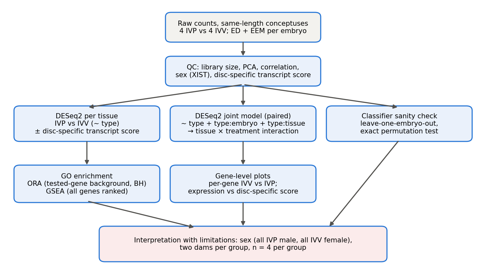
To illustrate how strongly the observed groups separate, IVP and IVV conceptuses were classified by leave-one-embryo-out cross-validation from either tissue. Both linear SVM and random forest separated the groups perfectly from the ED or the EEM alone (accuracy 1.00; permutation p = 0.029 over the 70 embryo-level label assignments, the lowest value obtained), and a classifier trained on one tissue also classified the other (accuracy 0.875–1.00; Supplementary Figure S2). Perfect separation is expected given the many DEGs and does not show whether it reflects production system, sex, cow or other aligned factors. The permutation result assumes that embryos are exchangeable, which is questionable when conceptuses share a cow, and the genes used are not biomarkers.
Methods. Linear SVM (e1071, cost = 1; Meyer et al., 2023) and random forest (randomForest, 500 trees; Liaw & Wiener, 2002) were trained on blind-VST expression. In leave-one-embryo-out cross-validation, both libraries of the held-out embryo were removed from training, and the top 100 genes by Welch t-statistic were selected on the training embryos only. Exact permutation p-values were obtained by repeating the full procedure for all 70 embryo-level label assignments. For cross-tissue prediction, each gene was z-scored within tissue and a model trained on one tissue was applied to the other tissue of the held-out embryo. Label-driven gene selection was restricted to training embryos, but the unsupervised transformations (blind VST and within-tissue standardisation) used all samples, including the held-out embryo; the gene numbers 50, 100 and 500 were fixed in advance and all are reported.
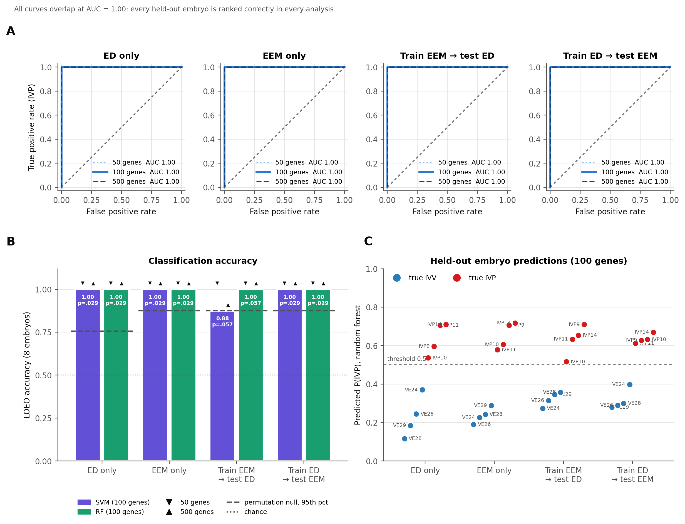
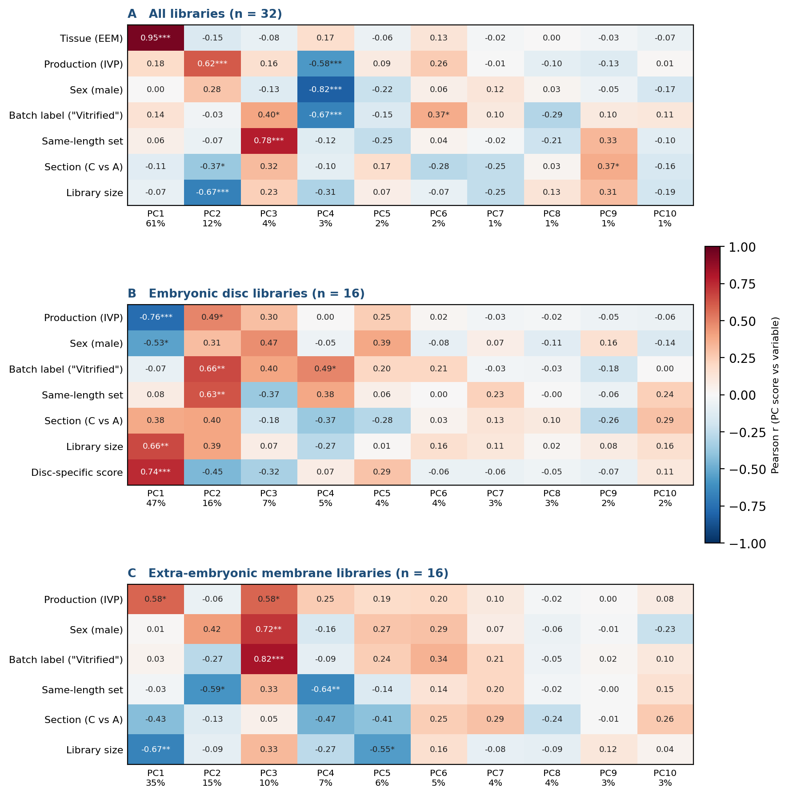
XIST, counts per million; sex inferred from XIST (< 1 male, > 25 female). Disc score, disc-specific transcript score (same-length ED libraries only). Sample-sheet label, recorded value of the sample-sheet field “cryopreserved”; its meaning is unresolved, and all IVP embryos were transferred fresh (Behrens et al., 2025). Primary, primary comparison (8 ED + 8 EEM libraries); male-only and full cohort, within-cohort sensitivity analyses. Conceptus lengths and embryo-to-cow assignments: not available. IVP10 and IVPF10 are different conceptuses.
| Library | Embryo | Group | Tissue | XIST | Inferred sex | Disc score | Sample-sheet label | Length category | Primary | Male-only | Full cohort | Note |
|---|---|---|---|---|---|---|---|---|---|---|---|---|
| VE24_EC | VE24 | IVV | ED | 53.5 | female | 8.32 | Fresh | same-length | ✓ | – | ✓ | |
| VE24_T1C | VE24 | IVV | EEM | 43.9 | female | – | Fresh | same-length | ✓ | – | ✓ | |
| VE26_EC | VE26 | IVV | ED | 47.9 | female | 8.88 | Fresh | same-length | ✓ | – | ✓ | |
| VE26_T1C | VE26 | IVV | EEM | 33.6 | female | – | Fresh | same-length | ✓ | – | ✓ | |
| VE28_EC | VE28 | IVV | ED | 52.7 | female | 9.13 | Fresh | same-length | ✓ | – | ✓ | |
| VE28_T1C | VE28 | IVV | EEM | 37.0 | female | – | Fresh | same-length | ✓ | – | ✓ | |
| VE29_EC | VE29 | IVV | ED | 56.8 | female | 9.27 | Fresh | same-length | ✓ | – | ✓ | |
| VE29_T1C | VE29 | IVV | EEM | 28.9 | female | – | Fresh | same-length | ✓ | – | ✓ | |
| IVP10_EC | IVP10 | IVP | ED | 0.3 | male | 7.33 | Vitrified | same-length | ✓ | ✓ | ✓ | |
| IVP10_T1C | IVP10 | IVP | EEM | 0.1 | male | – | Vitrified | same-length | ✓ | ✓ | ✓ | |
| IVP11_EC | IVP11 | IVP | ED | 0.1 | male | 7.73 | Vitrified | same-length | ✓ | ✓ | ✓ | |
| IVP11_T1C | IVP11 | IVP | EEM | 0.0 | male | – | Vitrified | same-length | ✓ | ✓ | ✓ | |
| IVP14_EC | IVP14 | IVP | ED | 0.0 | male | 8.47 | Vitrified | same-length | ✓ | ✓ | ✓ | |
| IVP14_T1C | IVP14 | IVP | EEM | 0.1 | male | – | Vitrified | same-length | ✓ | ✓ | ✓ | |
| IVP9_EA | IVP9 | IVP | ED | 0.0 | male | 8.47 | Vitrified | same-length | ✓ | ✓ | ✓ | |
| IVP9_T1A | IVP9 | IVP | EEM | 0.6 | male | – | Vitrified | same-length | ✓ | ✓ | ✓ | Lowest within-group correlation |
| IVPF10_EC | IVPF10 | IVP | ED | 0.0 | male | 7.77 | Fresh | same-length | – | ✓ | ✓ | No matching EEM library; not in primary comparison |
| VE19_EA | VE19 | IVV | ED | 104.7 | female | – | Fresh | other | – | – | ✓ | |
| VE19_T1A | VE19 | IVV | EEM | 67.7 | female | – | Fresh | other | – | – | ✓ | |
| VE3_EA | VE3 | IVV | ED | 0.1 | male | – | Fresh | other | – | ✓ | ✓ | |
| VE3_T1A | VE3 | IVV | EEM | 0.1 | male | – | Fresh | other | – | ✓ | ✓ | |
| VE4_EC | VE4 | IVV | ED | 77.6 | female | – | Fresh | other | – | – | ✓ | |
| VE4_T1C | VE4 | IVV | EEM | 40.9 | female | – | Fresh | other | – | – | ✓ | |
| VE5_EC | VE5 | IVV | ED | 0.1 | male | – | Fresh | other | – | ✓ | ✓ | |
| VE5_T1C | VE5 | IVV | EEM | 0.1 | male | – | Fresh | other | – | ✓ | ✓ | |
| VE6_EC | VE6 | IVV | ED | 130.3 | female | – | Fresh | other | – | – | ✓ | |
| IVPF13_EA | IVPF13 | IVP | ED | 0.1 | male | – | Fresh | other | – | – | – | Tissues disagree on inferred sex; excluded |
| IVPF13_T1A | IVPF13 | IVP | EEM | 61.4 | female | – | Fresh | other | – | – | – | Tissues disagree on inferred sex; excluded |
| IVPF14_EA | IVPF14 | IVP | ED | 0.2 | male | – | Fresh | other | – | ✓ | ✓ | |
| IVPF14_TA | IVPF14 | IVP | EEM | 0.1 | male | – | Fresh | other | – | ✓ | ✓ | |
| IVPF15_EC | IVPF15 | IVP | ED | 0.1 | male | – | Fresh | other | – | ✓ | ✓ | |
| IVPF9_T1A | IVPF9 | IVP | EEM | 102.6 | female | – | Fresh | other | – | – | ✓ |
Top eight GO biological-process terms and top five KEGG pathways in each direction (lowest FDR) for IVP vs IVV in the ED and EEM and for the tissue × group interaction. Size, number of tested genes in the set.
| Analysis | Database | Direction | Term | Size | NES | FDR |
|---|---|---|---|---|---|---|
| ED | GO BP | higher in IVP | cellular lipid metabolic process | 408 | +1.80 | 8.7e-06 |
| ED | GO BP | higher in IVP | glycosylation | 129 | +2.15 | 1.5e-05 |
| ED | GO BP | higher in IVP | protein glycosylation | 122 | +2.14 | 2.4e-05 |
| ED | GO BP | higher in IVP | macromolecule glycosylation | 122 | +2.14 | 2.4e-05 |
| ED | GO BP | higher in IVP | lipid biosynthetic process | 247 | +1.92 | 2.4e-05 |
| ED | GO BP | higher in IVP | glycoprotein biosynthetic process | 151 | +2.01 | 4.0e-05 |
| ED | GO BP | higher in IVP | glycoprotein metabolic process | 179 | +1.92 | 2.4e-04 |
| ED | GO BP | higher in IVP | glycerolipid metabolic process | 165 | +1.92 | 2.4e-04 |
| ED | GO BP | lower in IVP | anatomical structure morphogenesis | 408 | -1.93 | 2.4e-07 |
| ED | GO BP | lower in IVP | nervous system development | 452 | -1.69 | 2.4e-04 |
| ED | GO BP | lower in IVP | embryo development | 73 | -2.05 | 5.5e-04 |
| ED | GO BP | lower in IVP | system process | 161 | -1.86 | 6.1e-04 |
| ED | GO BP | lower in IVP | neuron differentiation | 276 | -1.72 | 7.7e-04 |
| ED | GO BP | lower in IVP | cell-cell signaling | 333 | -1.67 | 8.9e-04 |
| ED | GO BP | lower in IVP | animal organ development | 262 | -1.73 | 9.4e-04 |
| ED | GO BP | lower in IVP | neurogenesis | 319 | -1.65 | 1.4e-03 |
| ED | KEGG | higher in IVP | Glycerophospholipid metabolism | 88 | +1.97 | 4.1e-04 |
| ED | KEGG | higher in IVP | Glycerolipid metabolism | 56 | +1.96 | 3.4e-03 |
| ED | KEGG | higher in IVP | Glycosphingolipid biosynthesis - lacto and neolacto series | 23 | +2.09 | 3.9e-03 |
| ED | KEGG | higher in IVP | Sphingolipid metabolism | 50 | +1.88 | 7.4e-03 |
| ED | KEGG | higher in IVP | Ether lipid metabolism | 38 | +1.95 | 8.3e-03 |
| ED | KEGG | lower in IVP | Transcriptional misregulation in cancer | 146 | -2.21 | 6.7e-08 |
| ED | KEGG | lower in IVP | Basal cell carcinoma | 58 | -2.19 | 1.7e-05 |
| ED | KEGG | lower in IVP | Systemic lupus erythematosus | 64 | -2.19 | 2.2e-05 |
| ED | KEGG | lower in IVP | Neutrophil extracellular trap formation | 115 | -1.99 | 8.3e-05 |
| ED | KEGG | lower in IVP | Alcoholism | 132 | -2.00 | 1.1e-04 |
| EEM | GO BP | higher in IVP | cell adhesion | 252 | +1.94 | 9.2e-06 |
| EEM | GO BP | higher in IVP | axon development | 106 | +2.06 | 5.8e-05 |
| EEM | GO BP | higher in IVP | axonogenesis | 100 | +2.06 | 7.9e-05 |
| EEM | GO BP | higher in IVP | axon guidance | 70 | +2.10 | 2.7e-04 |
| EEM | GO BP | higher in IVP | neuron projection guidance | 70 | +2.10 | 2.7e-04 |
| EEM | GO BP | higher in IVP | regulation of biological quality | 418 | +1.64 | 3.0e-04 |
| EEM | GO BP | higher in IVP | cell migration | 182 | +1.85 | 3.4e-04 |
| EEM | GO BP | higher in IVP | nervous system development | 381 | +1.69 | 3.4e-04 |
| EEM | GO BP | lower in IVP | translation | 319 | -2.11 | 9.1e-10 |
| EEM | GO BP | lower in IVP | peptide biosynthetic process | 325 | -2.07 | 1.6e-09 |
| EEM | GO BP | lower in IVP | ribonucleoprotein complex biogenesis | 265 | -1.97 | 5.4e-07 |
| EEM | GO BP | lower in IVP | amide biosynthetic process | 368 | -1.88 | 5.4e-07 |
| EEM | GO BP | lower in IVP | protein folding | 126 | -2.21 | 3.9e-06 |
| EEM | GO BP | lower in IVP | cellular respiration | 80 | -2.32 | 5.1e-06 |
| EEM | GO BP | lower in IVP | ribosome biogenesis | 202 | -1.96 | 6.1e-06 |
| EEM | GO BP | lower in IVP | aerobic respiration | 73 | -2.33 | 1.2e-05 |
| EEM | KEGG | higher in IVP | Cytoskeleton in muscle cells | 162 | +2.21 | 6.0e-08 |
| EEM | KEGG | higher in IVP | Integrin signaling | 113 | +2.09 | 1.9e-05 |
| EEM | KEGG | higher in IVP | Calcium signaling pathway | 156 | +1.84 | 5.3e-04 |
| EEM | KEGG | higher in IVP | Cytokine-cytokine receptor interaction | 121 | +1.83 | 5.4e-04 |
| EEM | KEGG | higher in IVP | ECM-receptor interaction | 59 | +2.04 | 5.9e-04 |
| EEM | KEGG | lower in IVP | Protein processing in endoplasmic reticulum | 162 | -2.48 | 6.0e-11 |
| EEM | KEGG | lower in IVP | Ribosome | 180 | -2.35 | 2.0e-10 |
| EEM | KEGG | lower in IVP | Systemic lupus erythematosus | 56 | -2.57 | 6.0e-08 |
| EEM | KEGG | lower in IVP | Viral carcinogenesis | 162 | -2.04 | 5.3e-06 |
| EEM | KEGG | lower in IVP | Neutrophil extracellular trap formation | 107 | -2.16 | 1.2e-05 |
| Interaction (EEM − ED) | GO BP | more positive in EEM | nervous system development | 461 | +2.07 | 3.4e-12 |
| Interaction (EEM − ED) | GO BP | more positive in EEM | anatomical structure morphogenesis | 425 | +2.07 | 8.4e-12 |
| Interaction (EEM − ED) | GO BP | more positive in EEM | cell adhesion | 317 | +2.14 | 1.0e-10 |
| Interaction (EEM − ED) | GO BP | more positive in EEM | neurogenesis | 326 | +2.06 | 1.9e-10 |
| Interaction (EEM − ED) | GO BP | more positive in EEM | generation of neurons | 297 | +2.09 | 1.6e-09 |
| Interaction (EEM − ED) | GO BP | more positive in EEM | neuron differentiation | 283 | +2.09 | 2.5e-09 |
| Interaction (EEM − ED) | GO BP | more positive in EEM | cell morphogenesis | 208 | +2.11 | 8.2e-09 |
| Interaction (EEM − ED) | GO BP | more positive in EEM | neuron development | 226 | +2.11 | 2.8e-08 |
| Interaction (EEM − ED) | GO BP | more negative in EEM | establishment of protein localization | 453 | -2.38 | 1.4e-19 |
| Interaction (EEM − ED) | GO BP | more negative in EEM | protein transport | 394 | -2.37 | 7.2e-18 |
| Interaction (EEM − ED) | GO BP | more negative in EEM | intracellular protein transport | 291 | -2.44 | 2.3e-15 |
| Interaction (EEM − ED) | GO BP | more negative in EEM | Golgi vesicle transport | 166 | -2.63 | 4.0e-12 |
| Interaction (EEM − ED) | GO BP | more negative in EEM | endoplasmic reticulum to Golgi vesicle-mediated transport | 85 | -2.86 | 6.8e-12 |
| Interaction (EEM − ED) | GO BP | more negative in EEM | protein folding | 129 | -2.44 | 3.1e-09 |
| Interaction (EEM − ED) | GO BP | more negative in EEM | ribonucleoprotein complex biogenesis | 270 | -2.12 | 3.5e-09 |
| Interaction (EEM − ED) | GO BP | more negative in EEM | establishment of protein localization to organelle | 168 | -2.34 | 5.9e-09 |
| Interaction (EEM − ED) | KEGG | more positive in EEM | Cytoskeleton in muscle cells | 190 | +2.20 | 5.2e-09 |
| Interaction (EEM − ED) | KEGG | more positive in EEM | Cell adhesion molecule (CAM) interaction | 106 | +2.19 | 7.0e-07 |
| Interaction (EEM − ED) | KEGG | more positive in EEM | ECM-receptor interaction | 73 | +2.22 | 6.8e-06 |
| Interaction (EEM − ED) | KEGG | more positive in EEM | Axon guidance | 163 | +2.00 | 7.8e-06 |
| Interaction (EEM − ED) | KEGG | more positive in EEM | Integrin signaling | 131 | +1.96 | 1.8e-05 |
| Interaction (EEM − ED) | KEGG | more negative in EEM | Protein processing in endoplasmic reticulum | 164 | -3.06 | 1.2e-21 |
| Interaction (EEM − ED) | KEGG | more negative in EEM | Endocytosis | 230 | -2.01 | 1.2e-07 |
| Interaction (EEM − ED) | KEGG | more negative in EEM | Nucleocytoplasmic transport | 103 | -2.26 | 1.1e-06 |
| Interaction (EEM − ED) | KEGG | more negative in EEM | N-Glycan biosynthesis | 56 | -2.29 | 1.8e-05 |
| Interaction (EEM − ED) | KEGG | more negative in EEM | Lysosome biogenesis | 244 | -1.74 | 5.8e-05 |
Raw sequencing data are available in GEO under accession GSE278243 (Behrens et al., 2025). All analysis code, the sample sheet, the package lockfile (renv.lock), result tables and figures are available at https://github.com/janaki-bio/ivp-conceptus-rnaseq; its README explains how to request the gene-level count matrix from the corresponding author of Behrens et al. (2025) and how to reproduce every result.
Ashburner, M., Ball, C. A., Blake, J. A., Botstein, D., Butler, H., Cherry, J. M., Davis, A. P., Dolinski, K., Dwight, S. S., Eppig, J. T., Harris, M. A., Hill, D. P., Issel-Tarver, L., Kasarskis, A., Lewis, S., Matese, J. C., Richardson, J. E., Ringwald, M., Rubin, G. M., & Sherlock, G. (2000). Gene Ontology: tool for the unification of biology. Nat Genet, 25(1), 25–29. https://doi.org/10.1038/75556
Banliat, C., Mahe, C., Lavigne, R., Com, E., Pineau, C., Labas, V., Guyonnet, B., Mermillod, P., & Saint-Dizier, M. (2022). The proteomic analysis of bovine embryos developed in vivo or in vitro reveals the contribution of the maternal environment to early embryo. BMC Genomics, 23(1), 839. https://doi.org/10.1186/s12864-022-09076-5
Barkema, H. W., von Keyserlingk, M. A., Kastelic, J. P., Lam, T. J., Luby, C., Roy, J. P., LeBlanc, S. J., Keefe, G. P., & Kelton, D. F. (2015). Invited review: Changes in the dairy industry affecting dairy cattle health and welfare. J Dairy Sci, 98(11), 7426–7445. https://doi.org/10.3168/jds.2015-9377
Behrens, T., Balasubramanian, J., Ivask, M., Nõmm, M., Kavak, A., Bojsen-Møller Secher, J., Kadarmideen, H. N., & Rabaglino, M. B. (2025). In vitro processes alter the embryonic disc epigenome and transcriptome in the pre-implantation elongated bovine embryo. Biol Reprod, 115(2), 348–360. https://doi.org/10.1093/biolre/ioaf095
Benjamini, Y., & Hochberg, Y. (1995). Controlling the false discovery rate: a practical and powerful approach to multiple testing. J R Stat Soc Series B, 57(1), 289–300. https://doi.org/10.1111/j.2517-6161.1995.tb02031.x
Berg, D. K., van Leeuwen, J., Beaumont, S., Berg, M., & Pfeffer, P. L. (2010). Embryo loss in cattle between Days 7 and 16 of pregnancy. Theriogenology, 73(2), 250–260. https://doi.org/10.1016/j.theriogenology.2009.09.005
Berling, F. P., Mendes, C. M., & Goissis, M. D. (2024). Influence of glucose and oxygen tension on the trophectoderm and the inner cell mass of in vitro produced bovine embryos. Theriogenology, 225, 89–97. https://doi.org/10.1016/j.theriogenology.2024.05.032
Bermejo-Álvarez, P., Rizos, D., Rath, D., Lonergan, P., & Gutiérrez-Adán, A. (2010). Sex determines the expression level of one third of the actively expressed genes in bovine blastocysts. Proc Natl Acad Sci U S A, 107(8), 3394–3399. https://doi.org/10.1073/pnas.0913843107
Chankeaw, W., Lignier, S., Richard, C., Ntallaris, T., Raliou, M., Guo, Y., Plassard, D., Bevilacqua, C., Sandra, O., Andersson, G., Humblot, P., & Charpigny, G. (2021). Analysis of the transcriptome of bovine endometrial cells isolated by laser micro-dissection (2): impacts of post-partum negative energy balance on stromal, glandular and luminal epithelial cells. BMC Genomics, 22(1), 450. https://doi.org/10.1186/s12864-021-07713-z
Clemente, M., de La Fuente, J., Fair, T., Al Naib, A., Gutierrez-Adan, A., Roche, J. F., Rizos, D., & Lonergan, P. (2009). Progesterone and conceptus elongation in cattle: a direct effect on the embryo or an indirect effect via the endometrium? Reproduction, 138(3), 507–517. https://doi.org/10.1530/REP-09-0152
Clemente, M., Lopez-Vidriero, I., O’Gaora, P., Mehta, J. P., Forde, N., Gutierrez-Adan, A., Lonergan, P., & Rizos, D. (2011). Transcriptome changes at the initiation of elongation in the bovine conceptus. Biol Reprod. https://doi.org/10.1095/biolreprod.111.091587
de Barros, F. R. O., & Paula-Lopes, F. F. (2018). Cellular and epigenetic changes induced by heat stress in bovine preimplantation embryos. Mol Reprod Dev, 85(11), 810–820. https://doi.org/10.1002/mrd.23040
Ealy, A., Wooldridge, L., & McCoski, S. (2019). Board invited review: Post-transfer consequences of in vitro-produced embryos in cattle. J Anim Sci, 97(6), 2555–2568. https://doi.org/10.1093/jas/skz116
Gad, A., Hoelker, M., Besenfelder, U., Havlicek, V., Cinar, U., Rings, F., Held, E., Dufort, I., Sirard, M. A., Schellander, K., & Tesfaye, D. (2012). Molecular mechanisms and pathways involved in bovine embryonic genome activation and their regulation by alternative in vivo and in vitro culture conditions. Biol Reprod, 87(4), 100. https://doi.org/10.1095/biolreprod.112.099697
Gene Ontology Consortium. (2023). The Gene Ontology knowledgebase in 2023. Genetics, 224(1), iyad031. https://doi.org/10.1093/genetics/iyad031
Granleese, T., Clark, S. A., Swan, A. A., & van der Werf, J. H. (2015). Increased genetic gains in sheep, beef and dairy breeding programs from using female reproductive technologies combined with optimal contribution selection and genomic breeding values. Genet Sel Evol, 47(1), 70. https://doi.org/10.1186/s12711-015-0151-3
Hansen, P. J. (2020). The incompletely fulfilled promise of embryo transfer in cattle—why aren’t pregnancy rates greater and what can we do about it? J Anim Sci, 98(11). https://doi.org/10.1093/jas/skaa288
Holm, P., & Callesen, H. (1998). In vivo versus in vitro produced bovine ova: similarities and differences relevant for practical application. Reprod Nutr Dev, 38(6), 579–594. https://doi.org/10.1051/rnd:19980601
Jana Idrissi, S., Le Bourhis, D., Lefevre, A., et al. (2021). Lipid profile of bovine grade-1 blastocysts produced either in vivo or in vitro before and after slow freezing process. Sci Rep. https://doi.org/10.1038/s41598-021-90870-8
Kanehisa, M., & Goto, S. (2000). KEGG: Kyoto Encyclopedia of Genes and Genomes. Nucleic Acids Res, 28(1), 27–30. https://doi.org/10.1093/nar/28.1.27
Khan, D. R., Dube, D., Gall, L., Peynot, N., Ruffini, S., Laffont, L., Le Bourhis, D., Degrelle, S., Jouneau, A., & Duranthon, V. (2012). Expression of pluripotency master regulators during two key developmental transitions: EGA and early lineage specification in the bovine embryo. PLoS One, 7(3), e34110. https://doi.org/10.1371/journal.pone.0034110
Korotkevich, G., Sukhov, V., Budin, N., Shpak, B., Artyomov, M. N., & Sergushichev, A. (2021). Fast gene set enrichment analysis. bioRxiv. https://doi.org/10.1101/060012
Liaw, A., & Wiener, M. (2002). Classification and regression by randomForest. R News, 2(3), 18–22. https://CRAN.R-project.org/doc/Rnews/
Love, M. I., Huber, W., & Anders, S. (2014). Moderated estimation of fold change and dispersion for RNA-seq data with DESeq2. Genome Biol, 15, 550. https://doi.org/10.1186/s13059-014-0550-8
Meyer, D., Dimitriadou, E., Hornik, K., Weingessel, A., & Leisch, F. (2023). e1071: Misc functions of the Department of Statistics, Probability Theory Group. https://doi.org/10.32614/CRAN.package.e1071
Ming, H., Zhang, M., Rajput, S., Logsdon, D., Zhu, L., Schoolcraft, W. B., Krisher, R., Jiang, Z., & Yuan, Y. (2023). In vitro culture alters cell lineage composition and cellular metabolism of bovine blastocyst. bioRxiv. https://doi.org/10.1101/2023.06.09.544379
Moore, S., & Hasler, J. (2017). A 100-year review: Reproductive technologies in dairy science. J Dairy Sci, 100(12), 10314–10331. https://doi.org/10.3168/jds.2017-13138
Pearson, K. (1901). On lines and planes of closest fit to systems of points in space. Philos Mag, 2(11), 559–572. https://doi.org/10.1080/14786440109462720
R Core Team (2023). R: A language and environment for statistical computing. https://www.R-project.org/
Rabaglino, M., & Kadarmideen, H. (2020). Machine learning approach to integrated endometrial transcriptomic datasets reveals biomarkers predicting uterine receptivity in cattle at seven days after estrous. Sci Rep, 10(1), 16981. https://doi.org/10.1038/s41598-020-72988-3
Rabaglino, M., O’Doherty, A., Bojsen-Møller Secher, J., Lonergan, P., Hyttel, P., Fair, T., & Kadarmideen, H. (2021). Application of multi-omics data integration and machine learning approaches to identify epigenetic and transcriptomic differences between in vitro and in vivo produced bovine embryos. PLoS One, 16(5), e0252096. https://doi.org/10.1371/journal.pone.0252096
Rabaglino, M. B. (2023). Review: Overview of the transcriptomic landscape in bovine blastocysts and elongated conceptuses driving developmental competence. Animal, 17 Suppl 1, 100733. https://doi.org/10.1016/j.animal.2023.100733
Salilew-Wondim, D., Saeed-Zidane, M., Hoelker, M., Gebremedhn, S., Poirier, M., Pandey, H., Tholen, E., Neuhoff, C., Held, E., Besenfelder, U., Havlicek, V., Rings, F., Fournier, E., Gagné, D., Sirard, M., Robert, C., Gad, A., Schellander, K., & Tesfaye, D. (2018). Genome-wide DNA methylation patterns of bovine blastocysts derived from in vivo embryos subjected to in vitro culture before, during or after embryonic genome activation. BMC Genomics, 19(1), 424. https://doi.org/10.1186/s12864-018-4826-3
Subramanian, A., Tamayo, P., Mootha, V. K., Mukherjee, S., Ebert, B. L., Gillette, M. A., Paulovich, A., Pomeroy, S. L., Golub, T. R., Lander, E. S., & Mesirov, J. P. (2005). Gene set enrichment analysis: a knowledge-based approach for interpreting genome-wide expression profiles. Proc Natl Acad Sci U S A, 102(43), 15545–15550. https://doi.org/10.1073/pnas.0506580102
Viana, J. (2021). 2020 Statistics of embryo production and transfer in domestic farm animals. Embryo Technology Newsletter, 39(4), 24–37.
Viana, J. H. M., Figueiredo, A. C. S., Goncalves, R. L. R., & Siqueira, L. G. B. (2018). A historical perspective of embryo-related technologies in South America. Anim Reprod, 15(Suppl 1), 963–970. https://doi.org/10.21451/1984-3143-AR2018-0016
Wang, J., Guillomot, M., & Hue, I. (2009). Cellular organization of the trophoblastic epithelium in elongating conceptuses of ruminants. C R Biol, 332(11), 986–997. https://doi.org/10.1016/j.crvi.2009.09.004
Wu, T., Hu, E., Xu, S., Chen, M., Guo, P., Dai, Z., Feng, T., Zhou, L., Tang, W., Zhan, L., Fu, X., Liu, S., Bo, X., & Yu, G. (2021). clusterProfiler 4.0: A universal enrichment tool for interpreting omics data. The Innovation, 2(3), 100141. https://doi.org/10.1016/j.xinn.2021.100141
Zhu, A., Ibrahim, J. G., & Love, M. I. (2019). Heavy-tailed prior distributions for sequence count data: removing the noise and preserving large differences. Bioinformatics, 35(12), 2084–2092. https://doi.org/10.1093/bioinformatics/bty895
Zolini, A., Block, J., Rabaglino, M., Tríbulo, P., Hoelker, M., Rincon, G., Bromfield, J., & Hansen, P. (2020). Molecular fingerprint of female bovine embryos produced in vitro with high competence to establish and maintain pregnancy. Biol Reprod, 102(2), 292–305. https://doi.org/10.1093/biolre/ioz190